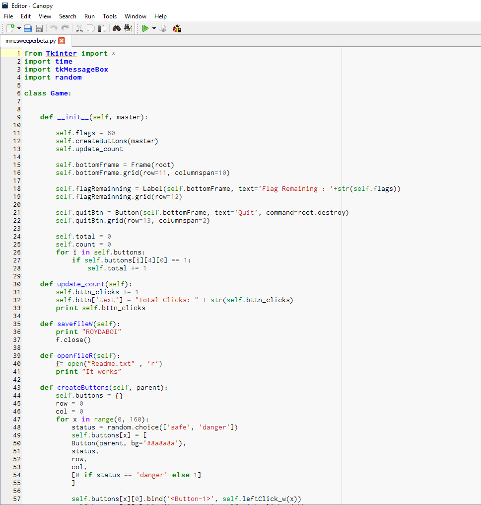
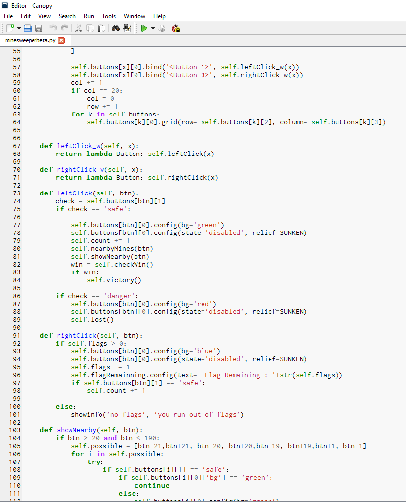
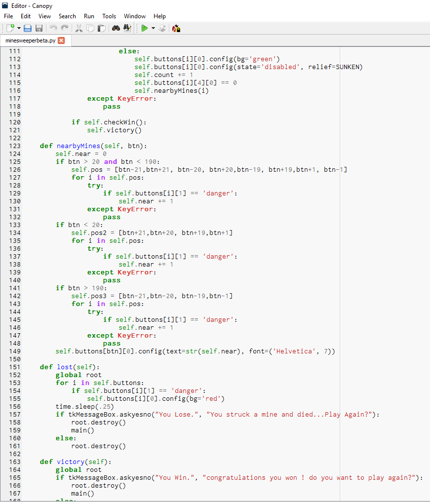
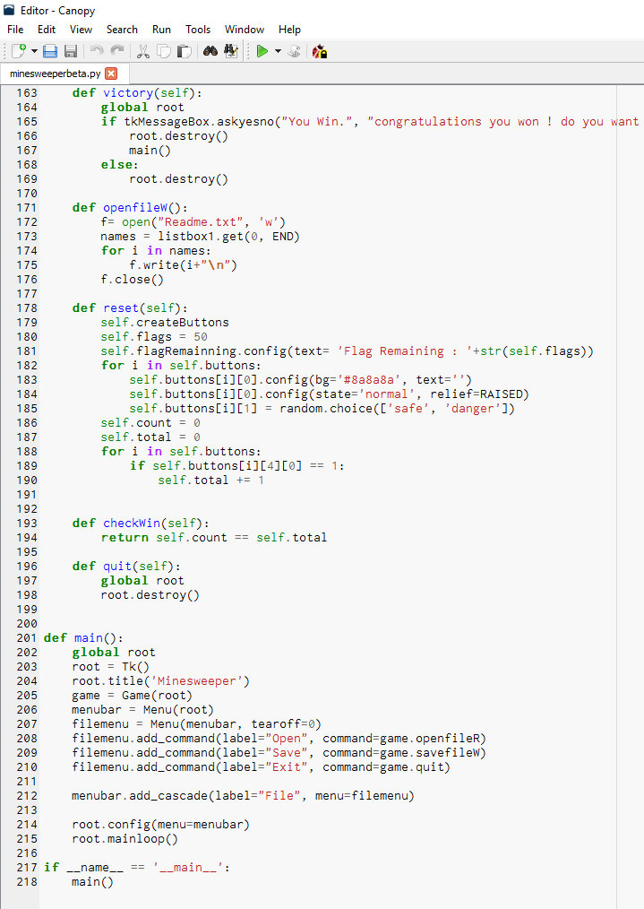

This is the Tkinter project Jason and I made in python. This program is Minesweeper, a game where you must figure out what spaces are mines. The purpose of this program is to kill time during a boring day in the office. In this video, I show off how the programming and the game operates. When you click a block on the randomly generated field you can either select a mine or a safe space. When you select a mine the games ends and you can either reset or quit.
   